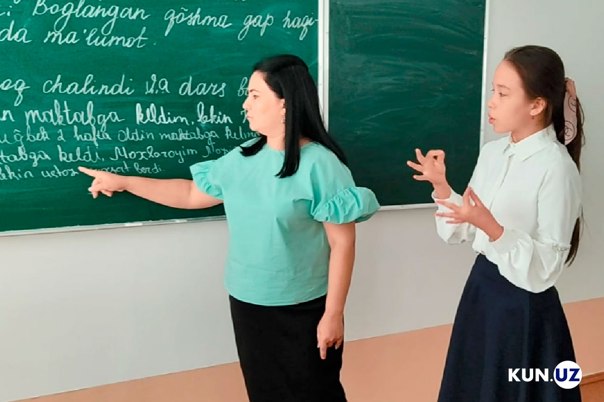

""To‘siqsiz muhit" milliy dasturi"
Jamoat transporti va binolar nogironligi bor shaxslar uchun 100% moslashtirilmoqda.
O‘zbekistonda 2026-yilga kelib inklyuziv ta’lim tizimi yangi sifat bosqichiga ko‘tarildi va bu jarayonda tyutorlik (yordamchi pedagog) xizmati eng muhim bo‘g‘in sifatida e’tirof etilmoqda. Bugungi kunda respublikaning har bir tuman va shahrida kamida bittadan, jami minglab umumta’lim maktablari inklyuziv ta’lim talablariga to‘liq moslashtirilgan bo‘lib, ularda alohida ta’lim ehtiyojlari bo‘lgan bolalarning tengdoshlari bilan birga ilm olishi uchun barcha sharoitlar yaratilgan. Tyutorlar — bu shunchaki o‘qituvchi emas, balki bolaning maktabdagi "yo‘l ko‘rsatuvchisi" bo‘lib, ular dars paytida o‘quvchining yonida o‘tirgan holda murakkab mavzularni uning imkoniyatiga qarab tushuntiradi, psixologik qo‘llab-quvvatlaydi va ijtimoiy moslashuviga ko‘maklashadi. 2026-yilgi islohotlar doirasida tyutorlar shtati rasman kengaytirildi va ularning ish haqi miqdori, pedagogik maqomi qonuniy mustahkamlandi. Hozirda maktablarda faoliyat yuritayotgan ushbu maxsus pedagoglar bolaning individual rivojlanish trayektoriyasini tuzadi, ya’ni har bir bola uchun uning jismoniy yoki aqliy holatidan kelib chiqib, yengillashtirilgan va moslashtirilgan o‘quv rejalari ishlab chiqiladi.

Tyutorlik tizimining joriy etilishi natijasida ilgari uyda ta’lim olishga majbur bo‘lgan minglab bolalar bugun maktab partalarida o‘tiribdi, bu esa ularning nafaqat bilim olishini, balki jamiyatga integratsiya bo‘lishini ham ta’minlamoqda. 2026-yilgi davlat dasturiga ko‘ra, tyutorlarni tayyorlash bo‘yicha oliy ta’lim muassasalarida maxsus kurslar soni oshirildi va ularga qo‘yiladigan malaka talablari xalqaro standartlarga muvofiqlashtirildi. Endilikda tyutorlar nafaqat defektologik bilimlarga, balki zamonaviy assistiv texnologiyalar bilan ishlash ko‘nikmalariga ham ega. Maktablarda tashkil etilgan "Inklyuziv ta’lim laboratoriyalari" tyutorlar faoliyatini doimiy monitoring qilib, metodik yordam ko‘rsatib bormoqda. Eng muhimi, bu tizim ota-onalarning ham xavotirlariga barham berdi, chunki endi ularning farzandi maktabda qarovsiz qolmaydi — tyutor dars jarayonida bolaning diqqatini jamlashga, topshiriqlarni bajarishga va tanaffus paytida xavfsiz harakatlanishiga mas’ul bo‘ladi. Shuningdek, 2026-yildan boshlab tyutorlar uchun alohida ustama haqlar tizimi joriy qilingan bo‘lib, bu mutaxassislarning sohada qolishi va sifatli xizmat ko‘rsatishi uchun kuchli motivatsiya bo‘lib xizmat qilmoqda. O‘zbekistonning ushbu tajribasi bugungi kunda mintaqadagi eng ilg‘or modellardan biri sifatida baholanmoqda, chunki u har bir bolaning ta’lim olish huquqini amalda, ya’ni jonli muloqot va professional yordam orqali kafolatlamoqda.